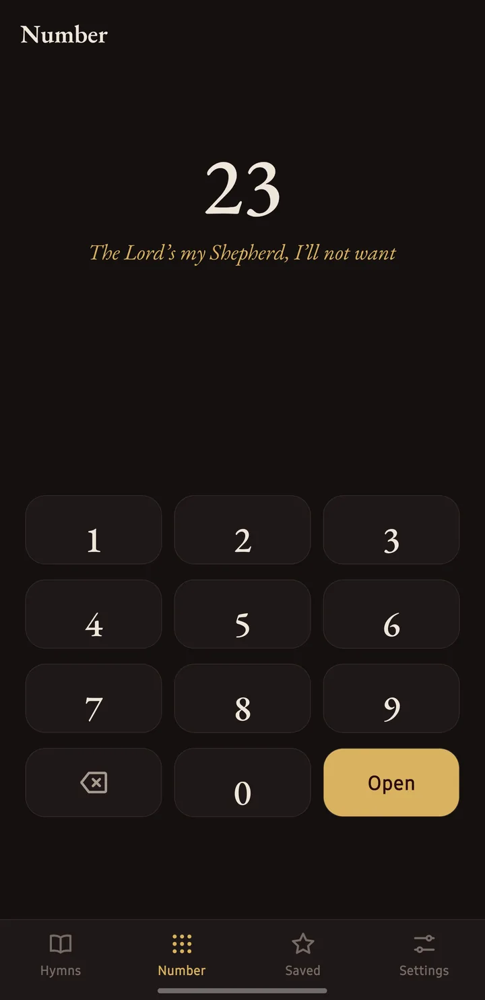
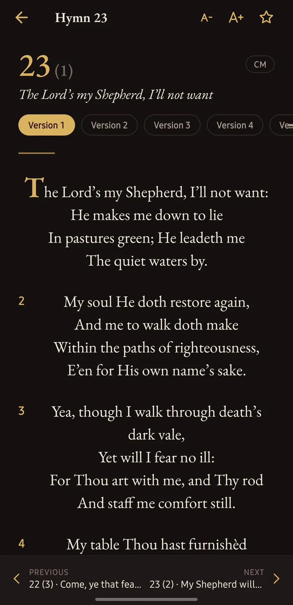
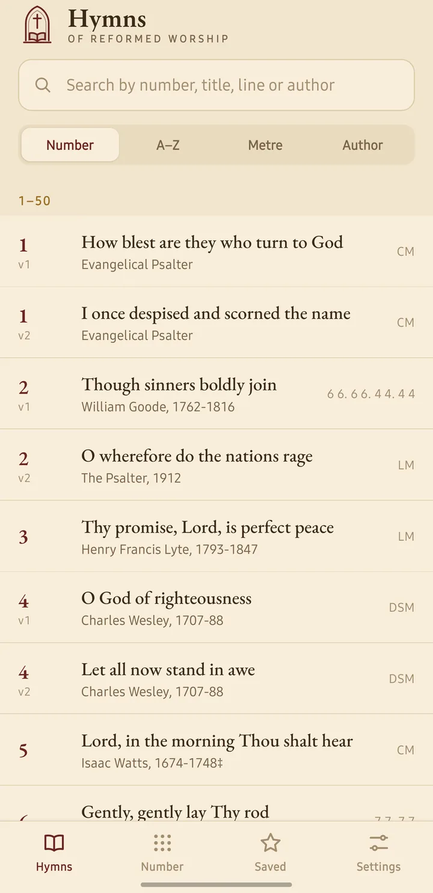
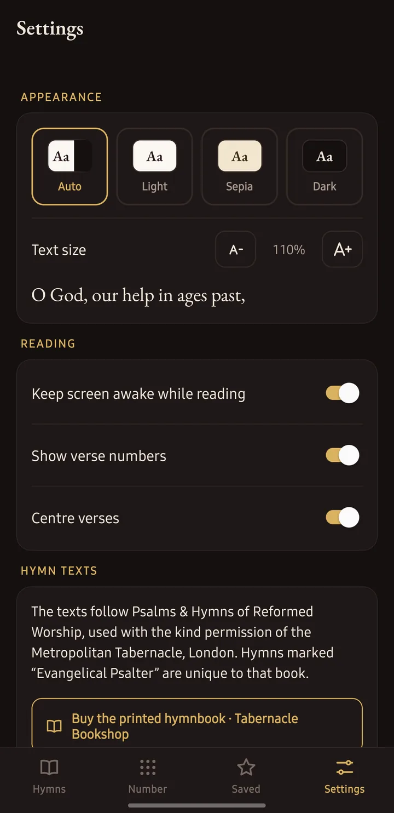

What's inside
- All 738 hymns, numbered as in the printed book, with alternative versions where the book has them.
- Number pad for jumping straight to the hymn announced in a service.
- Search by number, title, any line of text, author or metre.
- Browse by number, A–Z title, metre or author.
- Favourites and recently opened hymns, kept on your phone.
- Comfortable reading: Light, Sepia and Dark themes, adjustable text size, and the option to keep the screen awake.
- Works offline. No account, no adverts, no internet needed.
How to install
The app isn't in the Play Store yet, so Android will ask you to confirm that you trust it. This only takes a moment.
- On your Android phone, tap Download for Android above.
- When the download finishes, tap the notification, or open Files › Downloads and tap hymns-of-reformed-worship.apk.
- If your phone says it can't install unknown apps, tap Settings, turn on Allow from this source, then go back.
- Tap Install. If Play Protect says it doesn't recognise the app, tap More details › Install anyway.
The wording differs a little between phones. To update the app later, download it again from this page. It installs over the old version and keeps your favourites and settings.
The hymn texts
The texts follow Psalms & Hymns of Reformed Worship, used with the kind permission of the Metropolitan Tabernacle, London. Hymns marked "Evangelical Psalter" are unique to that book.
"Singing with grace in your hearts to the Lord."
Colossians 3:16